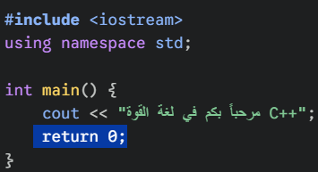
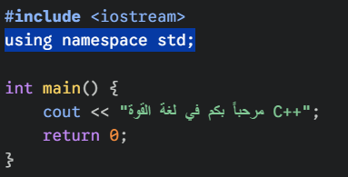
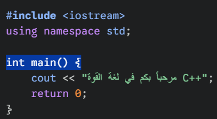
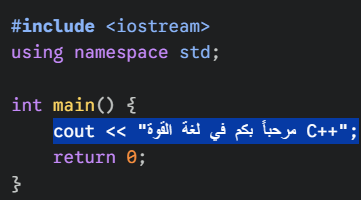

أساسيات لغة C++
تحليل هيكل برنامج C++
من خلال الصور التالية، سنشرح وظيفة كل سطر قمت بتظليله في VS Code:
1. استدعاء المكتبات (#include)

2. فضاء الأسماء (Using namespace)

3. الدالة الرئيسية (int main)

4. أمر الطباعة (cout)
